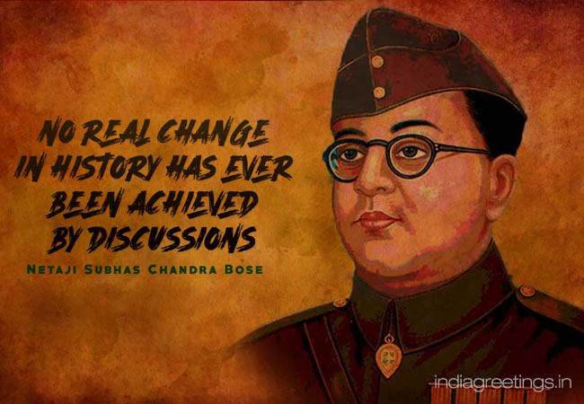

Subhas Chandra Bose 23 January 1897 – 18 August 1945, was an Indian nationalist whose defiance of British authority in India made him a hero among Indians, but his wartime alliances with Nazi Germany and Fascist Japan left a legacy vexed by authoritarianism and anti-Semitism. The honorific Netaji (Hindustani: "Respected Leader") was first applied to Bose in Germany in early 1942—by the Indian soldiers of the Indische Legion and by the German and Indian officials in the Special Bureau for India in Berlin. It is now used throughout India.
